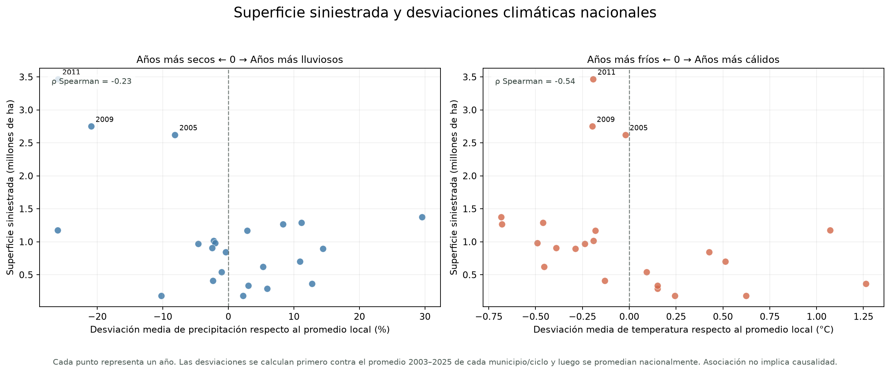
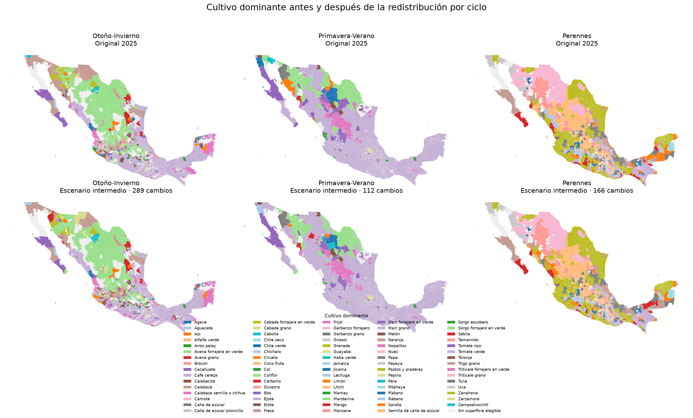

03 · Clima por ciclo productivo
Del dato diario de NASA al clima de cada ciclo
El clima de 2002 aporta octubre–diciembre para construir Otoño–Invierno 2003. Cada ciclo recibe su propia ventana de meses.
713,664registros mensuales: 2,478 municipios × 24 años × 12 meses
octubre anterior → marzo
abril → septiembre
enero → diciembre

08 · El territorio cambia con el tiempo y el ciclo
El cultivo dominante no es una fotografía fija
La animación anual revela regiones persistentes; la vista por ciclos muestra que Otoño–Invierno, Primavera–Verano y Perennes ocupan geografías distintas.

11 · Rendimiento, estabilidad y riesgo
Producir más no significa producir de forma estable
El coeficiente de variación distingue municipios consistentes de municipios volátiles. Los siniestros y anomalías climáticas aportan otra lectura del riesgo.


13 · Intercambios territoriales condicionados
Intercambiar superficie, no expandir la frontera agrícola
La optimización conserva la superficie de cada municipio–ciclo–modalidad y la superficie nacional de cada cultivo. El escenario intermedio recorre 25 % del camino entre la distribución observada y el óptimo estimado.


Potencial estadístico, no receta agronómica: todavía no incorpora costos, agua disponible, demanda, infraestructura, rotaciones ni decisiones de productores.